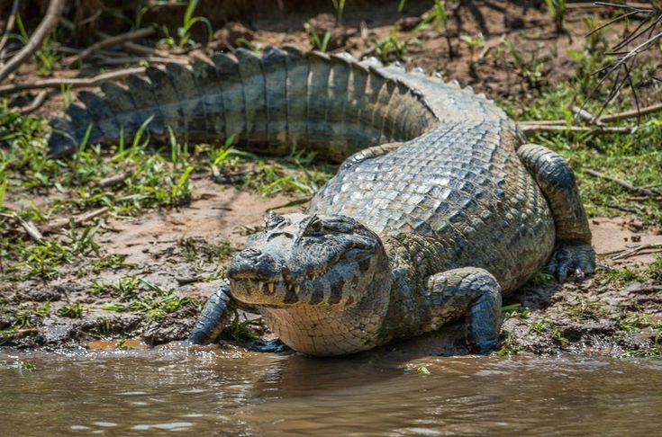

Vive en ríos, lagunas, pantanos y humedales de América Central y del Sur, generalmente en aguas cálidas y tranquilas.
Es un reptil semiacuático que pasa gran parte del tiempo en el agua. Es un depredador que caza principalmente por la noche.